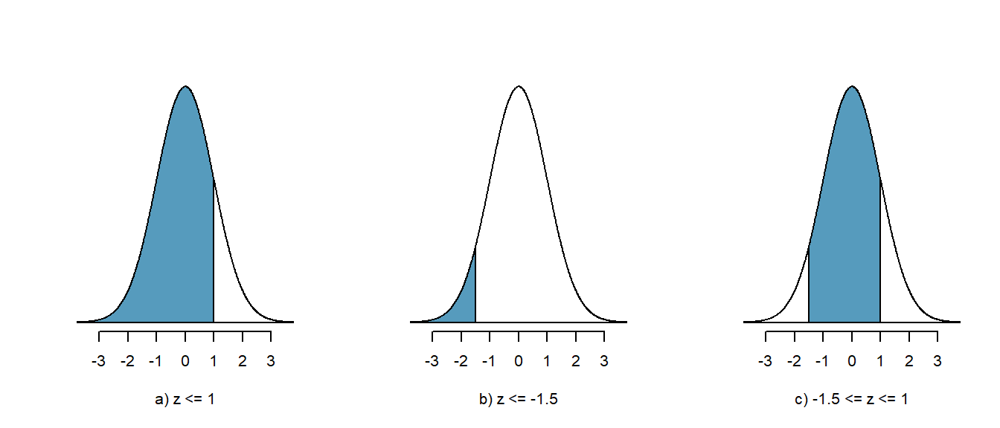

4 Wahrscheinlichkeitsverteilungen
4.1 Lernziele
Definiere Zufallsvariable als Beobachtungsmerkmal, dessen Ausprägung variiert und daher nicht exakt vorhergesagt werden kann.
Interpretiere die Wahrscheinlichkeitsverteilung einer Variable als Modell, das sich auf eine Grundpopulation bezieht.
Beachte, dass die Wahrscheinlichkeit \(P\) für ein Ereignis stets zwischen 0% und 100% liegt. \(P\) kann daher nur Werte zwischen 0 und 1 annehmen.
Interpretiere die Normalverteilung als eine kontinuierliche Verteilung.
In kontinuierlichen Verteilungen ist die Wahrscheinlichkeit für ein ganz bestimmtes Ereignis stets Null. Es ist aber möglich Wahrscheinlichkeiten für Wertebereiche (Intervalle) zu berechnen.
Die Normalverteilung ist symmetrisch um den Mittelwert und kann durch die Parameter Mittelwert \(\mu\) und Standardabweichung \(\sigma\) vollständig beschrieben werden. Mittelwert und Median sind in diesem Fall annähernd identisch.
- Interpretiere die Standardnormalverteilung als eine Normalverteilung mit dem Mittelwert \(\mu = 0\) und der Standardabweichung \(\sigma = 1\).
- Jede Normalverteilung kann durch \(z\)-Transformation in die Standardnormalverteilung umgewandelt werden.
\[z_n=\frac{x_n - \bar{x}}{s}\]
Interpretiere den \(z\)-Wert als Abstand eines Datenpunktes vom Mittelwert in Anzahl Standardabweichungen. Punkte mit negativen z-Werten liegen links vom Mittelwert und Punkte mit positiven z-Werten liegen rechts vom Mittelwert.
Verwende den \(z\)-Wert,
- … um die Perzentile eines Datenpunktes zu bestimmen (z.B. bei der Berechnung
von Konfidenzintervallen).
- … um zu bestimmen, ob ein Datenpunkt als ungewöhnlich beurteilt werden muss (Faustregel: \(z\) > 2 ist ungewöhnlich).
- Beurteile die Form einer Verteilung nach dem \(z\)-Wert des Medians (für den Mittelwert gilt immer \(z\) = 0)
- Bei rechtsschiefen Verteilungen hat der Median einen negativen \(z\)-Wert.
- Bei linksschiefen Verteilungen hat der Median einen postiven \(z\)-Wert.
Die 68-95-99.7%-Regel ist eine Faustregel die besagt, dass unter der Normalverteilungskurve 68% der Fläche innerhalb von \(\bar{x} \pm 1s\), 95% der Fläche innerhalb von \(\bar{x} \pm 2s\) und 99.7% der Fläche innerhalb von \(\bar{x} \pm 3s\) liegen.
Beurteile anhand eines Histogramms, eines Boxplots oder eines QQ-Plots, ob die beobachteten Daten aus einer normalverteilten Population stammen oder nicht.
Interpretiere die \(t\)-Verteilung als Anpassung der Normalverteilung, wenn die Standardabweichung \(\sigma\) einer Population unbekannt ist (was fast immer der Fall ist).
- Die Form der \(t\)-Verteilung ist nur abhängig vom Stichprobenumfang. Dieser
wird in Freiheitsgraden df angegeben, wobei \(df = n-1\).
- Ist der Stichprobenumfang \(n\) > 30, nähert sich die Form der \(t\)-Verteilung der Normalverteilung an.
- Die \(t\)-Verteilung wird mit dem Parameter \(df\) vollständig beschrieben.
- Interpretiere \(t\)-Werte, die von Statistikprogrammen angegeben werden, gleich wie z-Werte.
4.2 Zufallsvariablen
Unter einer Zufallsvariable verstehen wir ein Beobachtungsmerkmal, dessen Ausprägung in gewissem Umfang vom Zufall abhängig ist, d.h. dessen Ausprägung variiert und daher nicht exakt vorhergesagt werden kann.
4.3 Wahrscheinlichkeitsverteilungen
Eine Wahrscheinlichkeitsverteilung ist eine mathematische Funktion (ein Modell), welche die Wahrscheinlichkeiten für alle möglichen Werte einer Zufallsvariable beschreibt.
Das tönt recht technisch, ist aber anhand von einem Beispiel leicht zu verstehen: Stell dir vor, du möchtest wissen, wie gross deine Kolleginnen in der Klasse sind. Dazu misst du von jeder Person die Körpergrösse und stellst fest, dass gewisse Körpergrössen häufig und andere eher selten sind. Wahrscheinlichkeitsverteilungen helfen dir, wenn es darum geht zu verstehen, welche Merkmalsausprägungen eher häufig und welche eher selten zu erwarten sind. Sie erlauben auch die Beantwortung von Fragen wie: “Wie gross ist die Wahrscheinlichkeit, dass die nächste Person, die ich messe, grösser als zwei Meter ist?”
In der deskriptiven Statistik haben wir bereits Verteilungen von Zufallsvariablen kennen gelernt: Sie lassen sich durch Form (symmetrisch, links- oder rechtsschief, irregulär), Kennzahlen der zentralen Tendenz und Kennzahlen der Streuung beschreiben.
Beachte, dass Histogramme, Boxplots und Streudiagramme die Verteilung von Stichprobendaten beschreiben, während Wahrscheinlichkeitsverteilungen Modelle für die Verteilung von Daten in Populationen sind.
In der mathematischen Schreibweise wird die Wahrscheinlichkeit für ein Ereignis \(X\) geschrieben als
\[p(X) = Zahl~zwischen~0~und~1\]
Die Summe für alle möglichen Ausprägungen von \(X\) ist stets 1. Ausserdem ist die Wahrscheinlichkeit für eine bestimmte Merkmalsausprägung \(X\) ein Wert zwischen 0 (0%) und 1 (100%). Wenn wir also eine Münze werfen, dann ist die Wahrscheinlichkeit
\[p(Kopf) = 0.5\]
\[p(Zahl) = 0.5\]
Eine andere Möglichkeit für das Ereignis \(X\) existiert nicht. Die Summe aller möglichen Ereignisse \(X\) für den Münzwurf ist daher
\[p(Kopf) + p(Zahl) = 1\]
Wahrscheinlichkeitsverteilungen beschreiben also die Verteilung der Werte (Merkmalsausprägungen) einer bestimmten Zufallsvariable (Beobachtungsmerkmal). Daher ist es naheliegend, dass die Art der Variable einen Einfluss auf den Verteilungstyp hat. In der Statistik unterscheidet man zwischen
- Verteilungen für diskrete Variablen (z.B. Binomialverteilung) und
- Verteilungen für kontinuierliche Variablen (z.B. Normalverteilung)
Wir beschränken uns im Folgenden auf die Normalverteilung, die für zahlreiche statistische Verfahren von zentraler Bedeutung ist.
4.4 Die Normalverteilung
Wenn eine Variable innerhalb eines Bereichs unendlich viele Werte annehmen kann, kann diese mittels einer kontinuierlichen Verteilung modelliert werden.
Mathematisch ausgedrückt ist die Wahrscheinlichkeit, dass eine kontinuierliche Variable einen ganz bestimmten Wert annimmt gleich null. Z.B. die Wahrscheinlichkeit, dass eine Temperaturmessung exakt 37° C ergibt ist gleich null. Warum? In einem unendlichen Wertespektrum kann die aktuelle Temperatur unendlich viele kleinere oder grössere Werte annehmen, z.B. 36.99999999 oder 36.999999998 oder 37.000000001 etc. (es sind unendlich viele Nachkommastellen möglich).
4.4.1 Wahrscheinlichkeiten für kontinuierliche Daten?
Da es unmöglich ist, die Wahrscheinlichkeit für einen bestimmten Wert in einem kontinuierlichen Datenspektrum anzugeben, werden Wahrscheinlichkeiten für kontinuierliche Daten für Wertebereiche (Werteintervalle) berechnet und nicht für einzelne Werte. Was berechnet werden kann, ist die Wahrscheinlichkeit, dass ein gesuchter Wert in einem bestimmten Intervall liegt.
In einem Wahrscheinlichkeitsdiagramm ist die Fläche unter der Kurve gleich 1. Dies entspricht der Summe der Wahrscheinlichkeiten für alle möglichen Ausprägungen einer Variablen \(X\).
Abbildung 4.1: Die Fläche unter der Kurve ist gleich 1
In der Statistik nimmt die Normalverteilung (auch Gauss-Verteilung, Glockenkurve) eine zentrale Stellung ein. Diese symmetrische Wahrscheinlichkeitsverteilung erlaubt es, eine Vielzahl von kontinuierlichen Variablen wie z.B. Körpergrösse oder Ergebnisse von Intelligenztests (IQ-Scores) zu modellieren.
Eine Normalverteilung wird durch die Parameter Mittelwert \(\bar{x}\) und Standardabweichung \(\sigma\) vollständig beschrieben: Während eine Änderung des Mittelwerts die Glockenkurve nach links oder nach rechts verschiebt, führt eine Änderung der Standardabweichung dazu, dass die Kurve breiter oder schmaler wird.
Die Normalverteilung von Daten ist eine wichtige Voraussetzung für zahlreiche statistische Verfahren. Üblicherweise kennt man die wahre Verteilung einer Variablen in einer Population jedoch nicht und man muss aus den Stichprobendaten ermitteln, ob Evidenz dafür vorliegt, dass die Daten aus einer normalverteilten Population stammen. Wie man dabei vorgeht, wird weiter unten beschrieben.
4.4.2 Anwendung der Normalverteilung
Beispiel: Der Intelligenzquotient (IQ-Score) ist normalverteilt. Er hat einen Mittelwert \(\mu\) = 100 und eine Standardabweichung \(\sigma\) = 15. Die Abbildung zeigt die Wahrscheinlichkeitsverteilung für den IQ-Score. Uns interessiert z.B. die Frage, wie gross ist die Wahrscheinlichkeit, dass bei einem Test der IQ-Score zwischen 120 und 140 (also in ein bestimmtes Werteintervall) fällt.
Abbildung 4.2: Wahrscheinlichkeit für IQ-Score zwischen 120 und 140
Die Abbildung 4.2 zeigt, dass die Verteilung des IQ-Score symmetrisch ist. Die Höhe der Kurve in einem bestimmten Abschnitt gibt die Wahrscheinlichkeit an. Die Kurve hat ihr Maximum Werte um 100, also beim Mittelwert. Je weiter wir uns nach links oder rechts vom Mittelwert entfernen, desto geringer wird die Wahrscheinlichkeit für den IQ-Score. Die blaue Fläche zwischen den IQ-Scores 120 und 140 macht 8.7% der Gesamtfläche unter der Kurve aus. Damit ist die Wahrscheinlichkeit, dass der IQ-Score zwischen 120 und 140 fällt \(p\) = 0.087 bzw. 8.7%. Wir sehen also, dass ein IQ-Score zwischen 120 und 140 ein nicht sehr häufiges Ereignis ist.
4.4.3 Normalverteilung Vertiefung
Wie bereits erwähnt ist die Normalverteilung ist eine wichtige Wahrscheinlichkeitsverteilung in der Statistik, weil sie die Modellierung zahlreicher natürlicher Phänomene erlaubt. So sind z.B. Körpergrösse, Blutdruck, Messfehler von Instrumenten und Hämoglobin-Gehalt im Blut annähernd normal verteilt. Als Wahrscheinlichkeitsfunktion beschreibt sie, wie die Werte (Merkmalsausprägungen) einer Variablen (Beobachtungsmerkmal) verteilt sind. Die Kurve hat die Form einer Glocke (Gauss’sche Glockenkurve) und ist symmetrisch bezüglich des Mittelwerts, d.h. die häufigsten Merkmalsausprägugen liegen in der Nähe des Mittelwerts. Mit zunehmendem Abstand vom Mittelwert nach links oder rechts nimmt die Wahrscheinlichkeit für Werte ab und die Verteilungskurve nähert sich dem Wert 0 (den sie aber nie erreicht!).
Beispiel: Körpergrösse ist eine normalverteilte Variable ist. Die Abbildung zeigt die Verteilung der Körpergrösse von 14-jährigen Frauen aus einer Stichprobe von n = 800.
Abbildung 4.3: Körpergrösse 14-jähriger Mädchen in m (n = 800)
Das Histogramm in Abb. 4.3 zeigt die Verteilung der Daten in der Stichprobe und wir erkennen, dass die meisten Werte um den Mittelwert \(\bar{x}\) = 1.52m liegen. Werte über 1.65m oder unter 1.4m sind vergleichsweise selten anzutreffen. Die rote Kurve ist die Normalverteilungskurve mit dem Mittelwert \(\bar{x}\) = 1.52 und der Standardabweichung \(s\) = 0.07. Obwohl die Kurve das Histogramm nicht exakt abbildet, scheint sie ein akzeptables Modell für die Häufigkeitsverteilung zu liefern und wir dürfen annehmen, dass unsere Stichprobe aus einer annähernd normalverteilten Population stammt.
4.4.4 Parameter der Normalverteilung
Eine Normalverteilung wird mit den Parametern Mittelwert \(\mu\) und Standardabweichung \(\sigma\) vollständig beschrieben. Die Form einer Normalverteilung variiert jedoch in Abhängigkeit von diesen Parametern.
Der Mittelwert ist die Kennzahl der zentralen Lage. Er gibt den Wert an, an dem die Glockenkurve ihr Maximum hat. Die meisten Werte gruppieren sich um den Mittelwert herum. Eine Veränderung des Mittelwerts verschiebt die Kurve nach links oder nach rechts auf der x-Achse einer Grafik.
Abbildung 4.4: Der Mittelwert beeinflusst die Lage der Verteilung auf der x-Achse
Die Standardabweichung ist eine Kennzahl der Streuung. Unterschiedliche Standardabweichungen beeinflussen Breite der Glockenkurve.
Abbildung 4.5: Die Standardabweichung beeinflusst die Breite der Glockenkurve
4.4.5 Kennzahlen der Population vs. Kennzahlen von Stichproben
Wie oben ausgeführt, beschreibt das Normalverteilungsmodell die Verteilung der Daten in der Population. Um Stichprobenkennzahlen und Populationparameter leicht zu unterschieden, ist es gebräuchlich, Populationskennzahlen mit griechischen Buchstaben und Stichprobenkennzahlen mit römischen Buchstaben anzugeben. Daher wird ein Populationsmittelwert mit dem griechischen Symbol \(\mu\) und eine Populationsstandardabweichung stets mit dem griechischen Symbol \(\sigma\) angegeben.
Üblicherweise sind \(\mu\) und \(\sigma\) einer Population jedoch unbekannt, da es in der Regel unmöglich ist, eine gesamte Population zu messen. Wir können jedoch Zufallsstichproben ziehen um diese Parameter zu schätzen. Die Stichprobenkennzahlen, die als Punktschätzer (engl. point estimate) für die Populationsparameter dienen, werden mit den Symbolen \(\bar{x}\) für den Stichprobenmittelwert und \(s\) für die Stichprobenstandardabweichung angegeben. (Aus technischen Gründen wird in Grafiken für den Stichprobenmittelwert gelegentlich der Buchstabe \(M\) verwendet)
4.4.6 Eigenschaften von Normalverteilungen
Trotz ihrer unterschiedlichen Formen haben alle Normalverteilungen folgende gemeinsamen Eigenschaften:
- Alle Normalverteilungen sind symmetrisch.
- Median und Mittelwert sind identisch.
- Eine Hälfte der Werte liegt unter und eine Hälfte über dem Mittelwert.
- Die 68-95-99.7 Regel erlaubt es, den Anteil der Werte innerhalb einer bestimmten Distanz vom Mittelwert zu bestimmen.
4.4.7 Die 68 – 95 – 99.7 – Regel
Die 68-95-99.7 Regel ist eine empirische Regel der angewandten Statistik, die einen anschaulichen Zusammenhang zwischen Mittelwert und Standardabweichung eines normalverteilten Zufallsereignisses ermöglicht. Sie gibt an, wie viel Prozent der Daten innerhalb einer, zwei bzw. drei Standardabweichungen \(\sigma\) vom Mittelwert \(\mu\) entfernt sind.
Als Faustregel gilt:
- Mittelwert +/- 1 Standardabweichung: 68% der Daten
- Mittelwert +/- 2 Standardabweichungen: 95% der Daten
- Mittelwert +/- 3 Standardabweichungen: 99.7% der Daten
Abbildung 4.6: 68-95-99.7-Regel
Beispiel: Dein Lieblingspizzakurier wirbt damit, dass er innerhalb von durchschnittlich \(\bar{x}\) = 30 Minuten, mit einer Standardabweichung von \(s\) = 5 Minuten die bestellte Pizza liefern kann. Unter Anwendung der 68-95-99.7-Regel bedeutet dies, dass die Auslieferung
- in 68% der Bestellungen innerhalb von 25 bis 35 Minuten,
- in 95% der Bestellungen innerhalb von 20 bis 40 Minuten und
- in 99.7% der Bestellungen innerhalb von 15 bis 45 Minuten erfolgt.
4.5 Die Standardnormalverteilung
Wenn wir beliebige, normalverteilte Merkmale messen, werden wir immer wieder neue Normalverteilungen mit jeweils ihrem eigenen Mittelwert und ihrer eigenen Standardabweichung erhalten. D.h. die Normalverteilungskurve wird manchmal breiter, manchmal schmaler, manchmal höher, manchmal tiefer sein. Jedes Merkmal weist seine charakteristische Verteilung auf. In der Statistik interessieren wir uns oft für die Wahrscheinlichkeit, dass ein bestimmtes Ereignis eintritt (z.B. das Ereignis, dass eine Studentin 168 cm gross ist). Bei Daten aus normalverteilten Populationen erfolgt die Berechnung von Wahrscheinlichkeiten über die Berechnung von Flächeninhalten unter der Normalverteilungskurve. Allerdings ist diese Berechnung von Flächen unter Kurven eine nicht ganz triviale Angelegenheit (Schule Analysis!). Um diese Berechnungen zu erleichtern, wurde die Standardnormalverteilung “erfunden.” Diese ist eine Normalverteilung mit dem Mittelwert \(\mu\) = 0 und der Standardabweichung \(\sigma\) = 1. Jede beliebige Normalverteilung kann durch Transformation in eine Standardnormalverteilung umgewandelt werden, was Flächenberechnungen erheblich erleichtert.
Eine bestimmte Merkmalsausprägung in der Standardnormalverteilung wird als \(z\)-Wert bezeichnet. Der \(z\)-Wert gibt an, um wieviel Standardabweichungen diese Merkmalsausprägung vom Mittelwert entfernt ist. Ist der \(z\)-Wert negativ, liegt der Wert links vom Mittelwert, d.h. er ist kleiner als der Mittelwert. Ist der \(z\)-Wert positiv, liegt der Wert rechts vom Mittelwert und ist somit grösser. Der Mittelwert selber hat stets den \(z\)-Wert 0.
4.5.1 Berechnung von \(z\)-Werten (\(z\)-Transformation)
Um Stichprobendaten zu standardisieren, müssen die Rohdaten in \(z\)-Werte umgerechnet werden. Die Umwandlung einer beliebigen Normalverteilung in die Standardnormalverteilung erfolgt nach der Formel:
\[z_n=\frac{x_n - \bar{x}}{s}\]
Beispiel: Du hast zwei Äpfel, der eine wiegt 85g, der andere wiegt 110 g. Das durchschnittliche Gewicht von Äpfeln beträgt \(\bar{x}\) = 100g mit einer Standardabweichung \(s\) = 10 g.
- z-Wert für den 85g-Apfel: \(z_{85}=\frac{85-100}{10} = -1.5\)
- z-Wert für den 110g-Apfel: \(z_{110}=\frac{110-100}{10} = 1\)
Abbildung 4.7: Gewicht von Äpfeln (g), roh und standardisiert
Abbildung 4.8: \(z\)-Werte der beiden Äpfel
Der \(z\)-Wert für den 85g Apfel ist negativ da er leichter ist als ein durchschnittlicher Apfel. Um wie viel leichter? Um -1.5 Standardabweichungen = -1.5 \(\times\) 10 = -15g. Der \(z\)-Wert für den 110g-Apfel ist positiv, d.h. er ist schwerer als ein durchschnittlicher Apfel. Um wie viel schwerer? Um 1 Standardabweichung = 1 \(\times\) 10 = 10g.
4.5.2 Interpretation von z-Werten
Uns interessiert jetzt die Frage: Wie wahrscheinlich ist es, dass ein Apfel 85g schwer oder leichter ist?
Abbildung 4.9: Wahrscheinlichkeit für \(z\) gleich -1.5 oder kleiner
Die blaue Fläche unter der Kurve in Abbildung 4.9 entspricht der Wahrscheinlichkeit für \(z \leq -1.5\). Normalerweise verwenden wir den Computer, um Wahrscheinlichkeiten unter der Normalverteilungskurve zu berechnen. Vor dem Computerzeitalter erlaubte die z-Werte-Tabelle für beliebige Normalverteilungen beliebige Flächeninhalte und somit Wahrscheinlichkeiten zu berechnen.
Mit der Funktion pnorm() (R Core Team 2021) können wir in R/jamovi (The Jamovi Project 2021) diese Arbeit machen lassen:
pnorm(-1.5)## [1] 0.0668072R/jamovi gibt eine Wahrscheinlichkeit von \(p\) = 0.067 für \(z \leq -1.5\) an. Das bedeutet, dass wir erwarten können, dass die Wahrscheinlichkeit einen Apfel von 85g oder einen leichteren Apfel zu erhalten bei 6.7% liegt. Umgekehrt heisst es auch, dass die Wahrscheinlichkeit, einen Apfel zu erhalten, der schwerer als 85g ist, ist gleich \(p = 1-0.067 = 0.933\) bzw 93.3%.
Auch folgende Frage können wir stellen: Wie wahrscheinlich ist es, dass Ein Apfel 110g oder mehr wiegt?
Abbildung 4.10: Wahrscheinlichkeit für \(z\) = 1 oder grösser
Die blaue Fläche in Abbildung 4.10 entspricht der Wahrscheinlichkeit für \(z\geq1\). Wiederum hilft uns die z-Werte-Tabelle oder die Funktion pnorm() in R/jamovi:
pnorm(1)## [1] 0.8413447Aber dieses Ergebnis kann nicht richtig sein! Die Wahrscheinlichkeit \(p\) muss kleiner als 50% sein, da ja nicht die ganze Fläche rechts vom Mittelwert blau eingefärbt ist. Der “Fehler” kommt daher, dass die Funktion pnorm() stets die Fläche unterhalb des angegebenen \(z\)-Werts, also die Fläche links vom \(z\)-Wert, berechnet. Daher müssen wir in diesem Fall eine kleine Anpassung vornehmen und wir ziehen den \(p\)-Wert einfach von 1 ab:
1 - pnorm(1)## [1] 0.1586553Unsere Berechnungen haben ergeben, dass die Wahrscheinlichkeit \(p\), einen Apfel von 110g oder schwerer zu erhalten bei 15.8% liegt.
Zum Schluss noch folgende Übung: Wie gross ist die Wahrscheinlichkeit dafür, dass das Gewicht eines Apfels zwischen 85g und 110g liegt (c)? Auch diese Berechnung ist kein Problem: Zuerst berechnen wir, wie gross die Wahrscheinlichkeit ist, dass ein Apfel 110g schwer ist (a) und ziehen von diesem Wert die Wahrscheinlichkeit ab, dass ein Apfel 85g oder leichter ist (b).

Die Berechnung in R/jamovi folgt genau diesem Prinzip:
### R-Code
# Wahrscheinlichkeit für z <= 1
a <- pnorm(1)
# Wahrscheinlichkeit für z <= -1.5
b <- pnorm(-1.5)
# Wahrscheinlichkeit für -1.5 <= z <= 1
a - b ## [1] 0.7745375Die Wahrscheinlichkeit, dass ein Apfel zwischen 85g und 110g wiegt beträgt 77.5% (\(p = 0.775\)).
4.6 Prüfung auf Normalverteilung
Üblicherweise ist die die Verteilung der Daten in der Populationsdaten unbekannt Daher müssen wir anhand von Stichprobendaten abschätzen, ob eine Normalverteilung zu Grunde liegt. Dazu existieren mehrere Verfahren:
- Visuelle Verfahren zur Prüfung auf Normalverteilung
- Histogramm
- Boxplot
- QQ-Plot
- Histogramm
- Mathematische Verfahren
- Vergleich von Mittelwert und Median
QQ-Plot
Der QQ-Plot (Quantile-Quantile-Plot) ist ein wichtiges visuelles Hilfsmittel um zwei Wahrscheinlichkeitsverteilungen miteinander zu vergleichen. Wenn diese beiden Verteilungen identisch sind, liegen im QQ-Plot alle Punkte auf einer Linie.
Im QQ-Plot für Normalverteilung werden auf der x-Achse die Quantile einer Normalverteilung (theoretisch erwartete Werte) eingetragen und auf der y-Achse die Quantile der beobachteten Daten (Stichprobendaten).
Abbildung 4.11: Histogramm, Boxplot und QQ-Plot für eine Normalverteilung.
Liegt Normalverteilung vor hat
- das Histogramm annähernd die Form einer symmetrischen Glockenkurve.
- ist der Boxplot symmetrisch, Median und Mittelwert (roter Punkt) sind annähernd identisch.
- Liegen die Punkte im QQ-Plot annähernd auf einer Geraden.
Abbildung 4.12: Histogramm und QQ-Plot für eine rechtssteile Verteilung.
Beispiel für eine linksschiefe Verteilung:
- Im Histogramm sind die Daten linksschief verteilt.
- Der Boxplot ist asymmetrisch, der Mittelwert (roter Punkt) ist kleiner als der Median.
- Der QQ-Plot weist eine deutliche, nach oben konvexe Krümmung auf.
Abbildung 4.13: Histogramm und QQ-Plot für eine linkssteile Verteilung.
Beispiel für eine rechtsschiefe Verteilung:
- Im Histogramm sind die Daten rechtsschief verteilt.
- Der Boxplot ist asymmetrisch, der Mittelwert (roter Punkt) ist grösser als der Median.
- Der QQ-Plot weist eine deutliche, nach unten konvexe Krümmung auf.
Die Interpretation von QQ-Plots für kleine Stichproben ist schwierig und nicht immer ganz eindeutig möglich.
Abbildung 4.14: QQ-Plots für Stichproben (n = 28) aus einer perfekten Normalverteilung
In der Abbildung 4.14 wurden zehn Stichproben im Umfang von \(n\) = 28 aus einer perfekt normalverteilten Population gezogen. Die Grafiken 3, 6 und 8 könnten auch zur Einschätzung führen, dass die Daten nicht normal verteilt sind.
Abbildung 4.15: .
Diese Abbildung 4.15 zeigt reale Daten zur Körpergrösse aus einer Stichprobe \(n\) = 50 Personen. Obwohl wir theoretisch wissen, dass Körpergrösse eine normalverteilte Variable ist, würden wir aus den Stichprobendaten vermutlich einen anderen Schluss ziehen.
Wenn wir mit den Grafiken gar nicht weiterkommen, kann der Shapiro-Wilk-Test weiter helfen. Dieser Test ist ein Hypothesentest (s. Kapitel Grundlagen der Inferenzstatistik) auf Normalverteilung. Die Nullhypothese des Shapiro-Tests ist, dass die Population normalverteilt ist.
- Wenn der p-Wert des Tests gleich oder kleiner als 0.05 ist, dann wird die Normalitätshypothese durch den Shapiro-Test abgelehnt. Das heisst, dass die Daten mit mindestens 95%iger Sicherheit nicht der Normalverteilung entsprechen.
- Ist der p-Wert des Tests grösser als 0.05 ist der Test bestanden und es besteht keine Evidenz für eine signifikante Abweichung von der Normalverteilung.
Die Normalverteilung ist ein Konstrukt, das in seiner mathematisch reinen Form in der Natur nicht vorkommt. Keine Variable ist exakt normalverteilt. Es ist daher sinnlos zu fragen “Sind meine Daten normalverteilt?” weil die Antwort immer “NEIN” ist. Als Modell leistet die Normalverteilung jedoch gute Dienste und die bessere Fragestellung lautet “Habe ich Hinweise, die dagegen sprechen, dass meine Daten annähernd normalverteilt sind?” bzw. “Liegt Evidenz dafür vor, dass ich nicht von normalverteilten Daten ausgehen kann?”
4.7 Die \(t\)-Verteilung
Die \(t\)-Verteilung wird hier eingeführt, weil Statistikprogramme wie R oder jamovi bei den Hypothesentests als Teststatistik nicht einen \(z\)-Wert angeben, sondern einen \(t\)-Wert, was bei den Studierenden immer wieder zu Verwirrung führt. Es würde für diesen Kurs zu weit gehen, die \(t\)-Verteilung detailliert zu besprechen.
Die \(t\)-Verteilung ist eine Variante der Normalverteilung, die in der Statistik eine grosse Rolle spielt William S. Gosset, Pseudonym: Student hatte festgestellt, dass die standardisierte Schätzfunktion des Stichproben-Mittelwerts normalverteilter Daten nicht mehr normalverteilt, sondern eben \(t\)-verteilt ist, wenn die zur Standardisierung des Mittelwerts benötigte Varianz des Merkmals in der Population unbekannt ist und mit der Stichprobenvarianz geschätzt werden muss. Seine \(t\)-Verteilung erlaubt – insbesondere für kleine Stichprobenumfänge – die Berechnung der Verteilung der Differenz vom Mittelwert der Stichprobe zum wahren Mittelwert der Grundgesamtheit.
Abbildung 4.16: t-Verteilung für df = 1, 2, 4 und 8; Normalverteilung rot
Was muss ich zur t-Verteilung wissen?
- Für die praktische Arbeit gilt, dass die \(t\)-Verteilung als Anpassung der Normalverteilung für kleine Stichprobenumfänge aufgefasst werden kann. Ab einem Stichprobenumfang von n > 30 entspricht sie annähernd der Normalverteilung (diese Grenze ist bei den Statistikern umstritten, für uns ist sie jedoch als Faustregel gültig). Der \(t\)-Wert, den Statistikprogramme berechnen, wird gleich wie ein \(z\)-Wert interpretiert.
- Die Form der \(t\)-Verteilung ist abhängig vom Stichprobenumfang \(n\). Dieser wird in Freiheitsgraden (degrees of freedom, \(df\) angegeben), wobei \(df = n−1\). Je grösser die Anzahl Freiheitsgrade \(df\) ist, desto mehr nähert sich die \(t\)-Verteilung der Normalverteilung an.
- Aktuelle Statistikprogramme verwenden, unabhängig vom Stichprobenumfang, als Testsstatistik stets \(t\)-Werte anstelle von \(z\)-Werten.
- Wie für die \(z\)-Werte können auch Flächen für \(t\)-Werte unter der Kurve bestimmt werden. Dafür existieren Tabellen, z.B. hier Tabelle T-Verteilung. Genauer sind Internet-Rechner, z.B. hier Internet-Rechner T-Verteilung oder Statistikprogramme wie
R/jamovi.